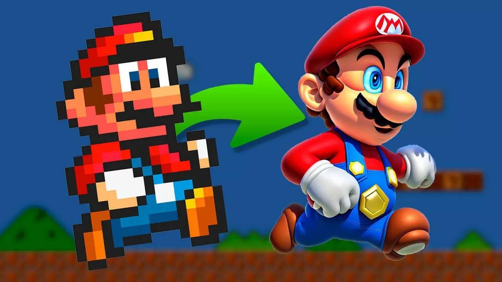
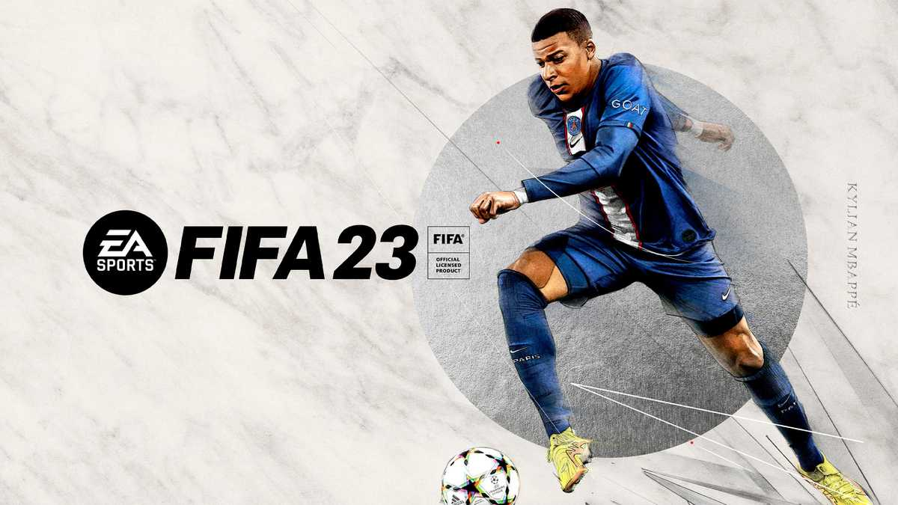
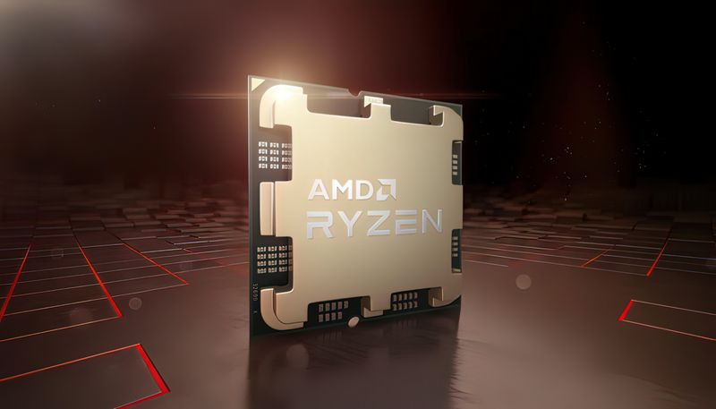
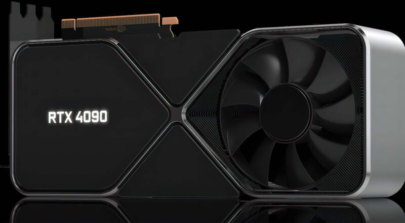

Después de tener a sus fanáticos descifrando pistas por varios días, Morat finalmente lanzó su segunda colaboración con Juanes, “506”. Una canción sobre un primer amor que no se olvida a pesar del tiempo. La canción será parte del nuevo disco que está preparando Morat, del que ya han lanzado otros dos temas: “París” con Duki y “Valen más”.
Últimos blogposts

Inteligencia Artificial
Las inteligencias artificiales (IA) de generación de imágenes están cada vez más de moda. Son herramientas que permiten introducir conceptos, ideas o incluso bocetos a partir de los que crean ilustraciones completas que dan la sensación de estar dibujadas por personas reales.

Videojuegos
Electronic Arts (EA) anunció que sus videojuegos de PC próximamente contarán con una nueva tecnología anti trampas, que blindaría los títulos a nivel de kernel. Según el estudio, este nuevo sistema fue diseñado a nivel interno y su propósito es garantizar que otros jugadores no puedan manipular el código de un juego y así asegurar que las partidas online con otros jugadores sean justas.

AMD
Quedan menos de dos semanas para que se lancen a la venta los AMD Ryzen 7000, pero no estarán solos. Y es que, ese mismo 27 de septiembre que es el día de lanzamiento de los nuevos Ryzen, Intel aprovechará para presentar sus Core 13. Mientras esperamos a las reviews oficiales, tenemos ante nosotros un Ryzen 7900X vs i9-12900KS en UserBenchmark, donde el AMD supera en single y multi core al actual tope de gama de Intel.

Nvidia
La fecha se acerca y los primeros hallazgos sobre lo más crucial en una tarjeta gráfica de nueva generación, el precio, ya se está dejando ver. Y es que un minorista vietnamita está ofreciendo reservas mediante pedidos anticipados para la NVIDIA RTX 4090 a un precio que... Da miedo.
Space X
La Nasa otorgó a la compañía SpaceX cinco misiones adicionales para servicios de transporte de tripulación a la Estación Espacial Internacional (EEI) como parte del contrato de transporte de personal comercial (CCtCap, en inglés) de la agencia estadounidense.
Cine
Mientras esperamos el estreno de Avatar: El sentido del agua, la primera película de esta franquicia regresará a la pantalla grande en cines selectos y por tiempo limitado. Esto no solo ocurrirá en Argentina, sino en varios países del mundo. Para celebrarlo, James Cameron habló sobre esta producción y reveló por qué decidió retomar la historia.


.png)